ひとりひとりの
個性を
引き出すために
感じる
考える
試す
を大切にする
保育
私たちの理念 ～毎日の活動に工夫と変化を与え個性を引きだすきっかけに～
育てたい子どもの姿
育てたい子どもの姿
やり遂げる
意志の強い子
心を持てる子
表現できる子
山王保育園は、
乳幼児が健やかに育つために必要な
養護と教育の全てを備えた施設です。
「学校教育に必要な学習」
「豊かな感性を養う音楽・絵画の指導」
「家庭や地域に育児指導の場を提供する
地域子育て支援センター事業」
など、新しい時代の保育に取り組む
総合保育センターです。
保育の特色
音楽・表現
活動
豊かな感性を養う音楽指導や表現活動を通して、創造性を育みます。
自然との
ふれあい
園外保育や季節の行事を通して、自然の美しさや命の大切さを学びます。
学習の
基礎
づくり
就学に向けた基礎的な学習を遊びの中で楽しく身につけます。
体力
づくり
毎日の運動や遊びを通して、健やかな体と運動能力を育てます。
社会性の
育成
異年齢交流や地域との関わりを通して、協調性と社会性を身につけます。
食育活動
クッキング体験や野菜作りを通して、食への関心と感謝の心を育てます。

毎月行う行事■絵画指導（ゆり、さくら組） ■音楽指導 ■誕生会 ■身体計測 ■避難訓練 ■食育（ランチタイム） ■ベルマーク回収
■体操教室（年４回） ■正座道場（ゆり組） ■スイミング教室（ゆり、さくら組希望者）
■0・1歳児健康診断（5・7・9・11・1・3月）